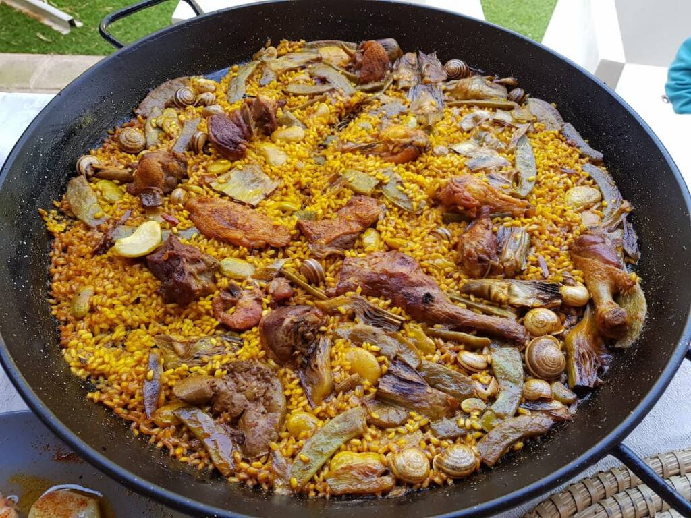

Paella

Esto es una imagen de una paella
Para preparar una paella casera, mezcla arroz, agua, aceite de oliva y una combinación de especias para crear la base.
Cocina lentamente, permitiendo que los sabores se absorban en el arroz.
Añade ingredientes como pollo, conejo, judías verdes y garrofó para enriquecer el plato.
Continúa cocinando hasta que el arroz esté tierno y haya absorbido los sabores.
Personaliza con limón y perejil fresco justo antes de servir.
¡Listo para disfrutar de una deliciosa paella casera!
Ingredientes
- Arroz
- Agua o Caldo de Pollo
- Aceite de Oliva
- Azafrán
- Pimentón
- Tomates
- Pimientos
- Judías Verdes (ejotes)
- Garrofó
Pasos para Hacer Paella
- Calentar aceite de oliva en una paellera.
- Añadir los pimientos y judías verdes, y saltear hasta que estén tiernos.
- Incorporar el tomate triturado y cocinar hasta que se reduzca y espese.
- Agregar el arroz y mezclar para que se impregne con los sabores.
- Disolver el azafrán en un poco de caldo y agregar a la paellera.
- Verter el caldo caliente en la paellera y distribuir los ingredientes de manera uniforme.
- Añadir el garrofó y cualquier otro ingrediente adicional (pollo, conejo, etc.).
- Cocinar a fuego medio durante unos 15-20 minutos y luego reducir el fuego.
- Continuar cocinando hasta que el arroz esté tierno y se forme una deliciosa costra en la parte inferior.
- Decorar con limón y perejil fresco antes de servir.